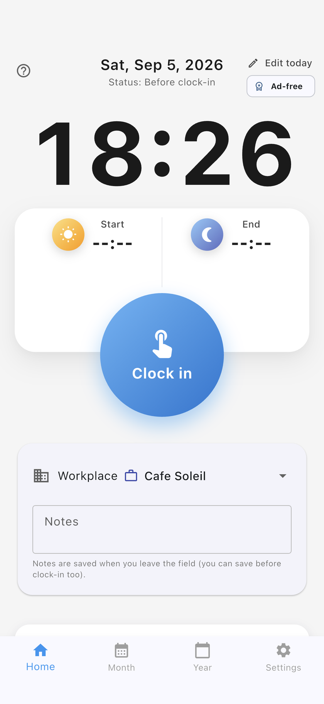
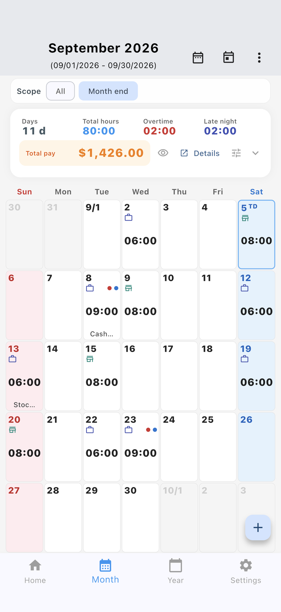

500k+ installs on Android
A refreshed version of the Time Card app people have relied on on Google Play for years—same simple punch flow, updated for today’s devices.
500k+ installs on Android
For part-time, freelance & hourly work
A free time-tracking app with one-tap clock-in and clock-out from the home screen. Multiple workplaces, breaks, shifts across midnight, a monthly list or calendar, and yearly estimated pay — all in one simple app. Available on iPhone and Android.




Built for individuals who want quick punches and a clear view of “today” and “this month” — not enterprise workforce management.
A refreshed version of the Time Card app people have relied on on Google Play for years—same simple punch flow, updated for today’s devices.
Large buttons on the home screen for clock-in and clock-out. Add breaks, notes, or daily edits only when you need them.
We do not store your time records on developer servers. Google Drive or iCloud backup is optional, when you want it.
Highlights from Ver. 3.2.0 — the same updates shown in the App Store and Google Play release notes.
See the user guide (Monthly) for how to use these features.
Built for individuals who want to see “today” and “this month” — not enterprise workforce management.
Large home-screen buttons for quick punches. Supports breaks, memos, and shifts that span dates or midnight.
Set hourly rate, pay period, rounding, and target amounts per workplace.
Switch between list and calendar. See daily hours, overtime, late night, holidays, and estimated pay.
Punch from your home screen. You can hide monthly pay on the widget when you want privacy.
Backup and restore via Google Drive or iCloud; share CSV through your device’s share sheet (e.g. email).
Time records are not stored on the developer’s servers. Cloud backup only when you choose it.
Common questions about this free time-tracking app. For step-by-step help, see the user guide.
Yes. Download it for free from the App Store and Google Play. The app shows ads. Watch a short rewarded video to hide in-app ads for 48 hours.
Yes. It is not an enterprise attendance system. It helps individuals record when they worked and see monthly hours and pay estimates. Built for part-time, freelance, and hourly jobs.
Yes. Set hourly rate, payday, rounding, and goals per workplace. Switch the workplace on the Home screen before punching.
Yes. Available on iPhone (App Store) and Android (Google Play). The Android version has 500k+ installs.
Time records stay on your device. There is no developer server that stores attendance data. Google Drive or iCloud backup is optional.
It shows pay estimates from your hourly settings. Final pay and invoices follow your employer or contract.
Yes. The Month tab switches between a list and a calendar. The calendar shows daily hours, holiday names, and total pay.
From one-tap punches to the monthly list and calendar, yearly income chart, workplaces, and widget. The UI may change with updates.